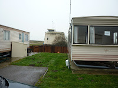
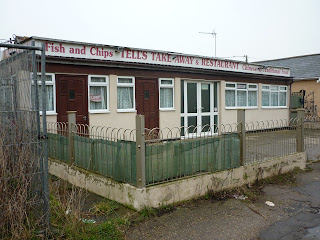
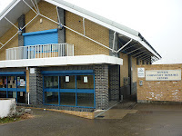
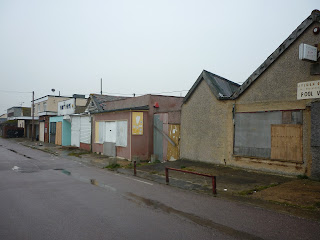
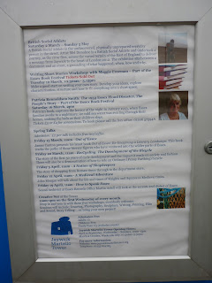
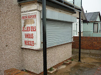
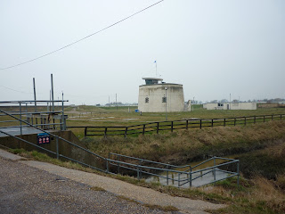

 |
| Jaywick Martello Tower |
{kind=link}
When you think of a literary festival
you think tasteful: You think Edinburgh, Oxford, Cheltenham,
Harrogate, Bath and countless smaller events in delightful venues
such as Aldeburgh, Southwold, Ilkley, Henley-on-Thames. You don't
think Jaywick.
It's quite possible that you never
think of Jaywick at all – unless you're an architectural historian
interested in the plotlands of the early twentieth century (read
Arcadia for All by Dennis Hardy and Colin Ward) or you're a
planner or a project manager concerned with the indices of
deprivation. Jaywick is on the flatlands, west of Clacton on Sea in
Essex. In 1928 developer Frank Stedman bought several hundred acres
of marsh grazing on which he founded the Jaywick Sands Estate. He'd
hoped to build permanent houses but Clacton council refused
co-operation over the rather important issue of mains drainage so
Stedman sold freehold beachplots of 1000 sq feet plus a hut. These
were heavily advertised and eagerly aquired.
| Jaywick Martello Tower caravan park |
{kind=link}
The plotlands movement
was particularly popular in Essex – the county with the fewest
grand families and big estates in all England. Speaking as an
indigenous Essex dweller of many generations I am certain that our
single most deeply shared desire, whatever our income bracket, is to
possess our own freehold patch of land from which we can thumb our
noses at the authorities. Jaywick represents something close to the
heart of Essex. It also contains England's third most deprived
neighbourhood.
 |
| Breakfasts from 10am |
{kind=link}
In the 1990s I was a Workers' Education
Association community development manager and (among other things) I
blagged and weedled lottery money to take sets of internet-enabled
laptops into refuges, hostels, asylum-seeker centres, family centres
and schools in poor areas thoughout the county. The idea was to avoid
a have / have not situation in the new and exciting on-line world by offering confidence-building courses to educationally
deprived adults, then swiftly pointing out that if they couldn't
afford a computer or internet connection costs, they could get it all
for free in Essex Libraries. That's one of the more interesting Essex
paradoxes: the sensitivity of our social care provision is often
criticised; our library resources are second to none.
 |
| Jaywick Community Centre opened 1997 |
{kind=link}
I'm a privately-educated idiot with a
ladidah voice so I was often at a social disadvantage as I joined in
the WEA activities I'd organised.. I remember vividly one day in
Jaywick when we'd been given space in the fab new community centre
(built with money from the European Social Fund) and we were having
one of our all-action craft and computer sessions with a hall-full
of parents and children. My job was to drift around dispensing
educational bonhomie and encouraging the faint-hearted to have a go
on the laptops.
I was chatting to one attractive young woman who told
me she was already using a computer database programme every day.
“I need it to keep track of all me
appointments.”
“Oh,” said I, ineffably
patronising, “Do you run a little business?”
“Nah,” she replied, “It's the
probation and the social services, and the housing and the child
protection and the mental health and the education welfare and me
lawyers … They get arsy if you don't show up.”
Feeling rather faint I asked her how
she'd got into this complexity and she explained that she was
separated from the father of her children and that he was supposed to
come and take them out on Saturday to give her a bit of time to
herself. Unfortunately he wasn't either punctual or reliable. I was a
single mum of three with not dissimilar issues so I was able to
sympathise. We warmed to one another.
“And so when it got to dinner time
and he still hadn't showed up. I went down the high street and I
stabbed him.”
 |
| Next to the Community Centre |
{kind=link}
I was back in Jaywick today as part of
the Essex Book Festival. Since my WEA visits a converted Martello
tower has been added to the amenities of the area. It's two hundred
years old and exists, with shabby incongruity, in the midst of
multiple caravan parks. It's a coastal lookout station and thoughout
the summer season it's also a “centre of creativity and discovery”
hosting weekly talks and art exhibtions, workshops and story telling
sessions as well as two forthcoming events for the Essex Book
Festival. I'd hoped to go inside and meet the organiser but she was
ill so I crept around in the drizzle delighted to see that my friend,
author and former WEA tutor, Maggie Freeman's 'Writing Short Stories
Workshop' had already SOLD OUT.
 |
| Martello Tower noticeboard |
{kind=link}
The Essex Book Festival runs throughout
the month of March almost entirely in libraries, though also using
schools, our two universities, a children's book centre and other
commuity venues – such as Jaywick Martello Tower. My own event, a
talk about Herbert Allingham's working life, will be at the leafier
end of the county, in Epping Library, but today I was by the sea
because the EBF has been granted money to run book-related projects
in schools. Literacy levels are low in parts of the Tendring Hundred
(where Jaywick and Clacton are situated) and I was on my way to
discover whether The Salt-Stained Book might
serve any purpose in convincing Clacton children that if Julia can
write a story, anyone can. I found my way to a large junior school,
bright, well-run, crowded, a cultural centre of a different sort than
the lonely Martello Tower. . The headteacher had hoped to join our
meeting but he was called out almost immediately to contain and
support a 'looked after' boy whose life was more than usually
difficult and who was therefore behaving particularly badly.
 |
| Closed for the winter |
{kind=link}
I suggested to the
teachers that I should have a couple of sessions with Year 5 children
towards the end of the summer term, leave them with some private
projects and then return in the autumn as they start their final year
to discuss and praise whatever they have managed to produce. I
wondered whether some mild I Spy activity might be a way to keep them
connected with the world of the SSB without turning it into a Holiday
Task. The older of the two teachers thought this might be worth a try. Then he said the saddest thing. “I
used to get them back into writing at the beginning of the autumn
term, by getting them to talk about what they'd done over the summer
but that doesn't work anymore. The change seems to have happened over
the last ten years. Most of the children won't have done anything
over the summer except play video games and go shopping, They won't
even have gone to the beach.”
 |
| Talks, exhibitions, workshops, story-telling |
{kind=link}